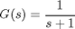
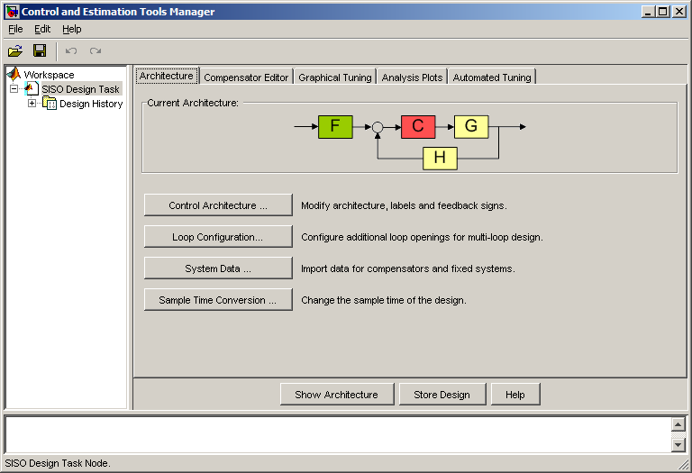
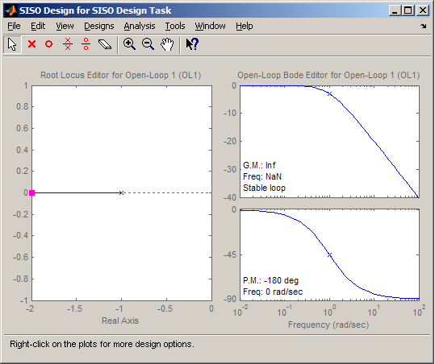
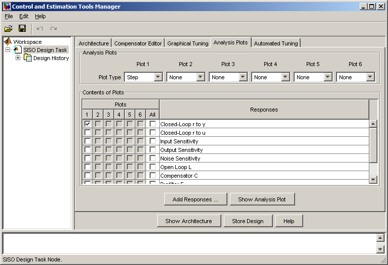
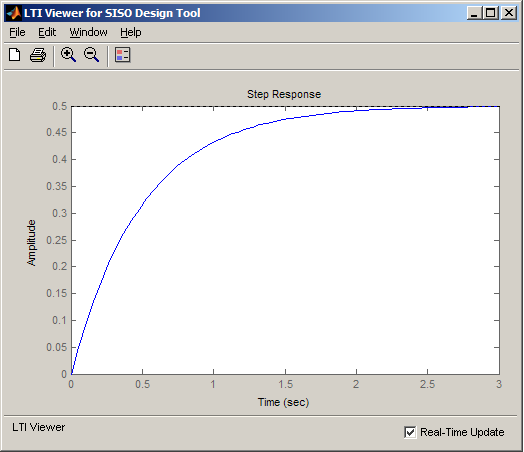
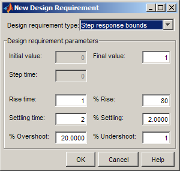
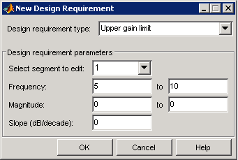
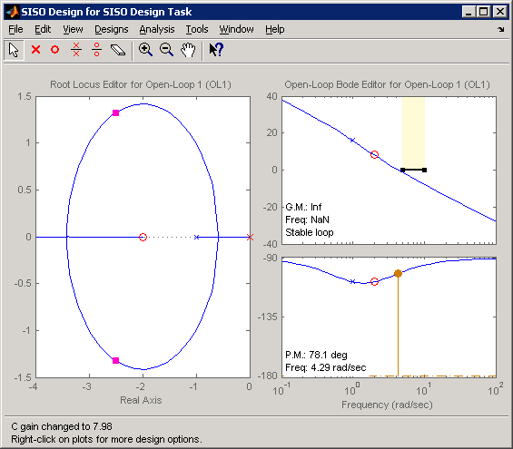
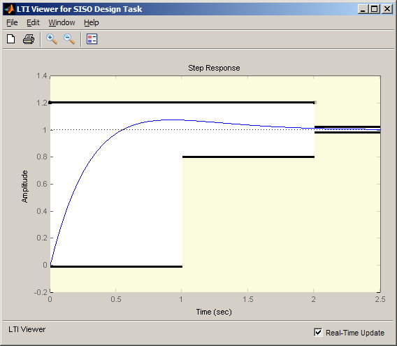
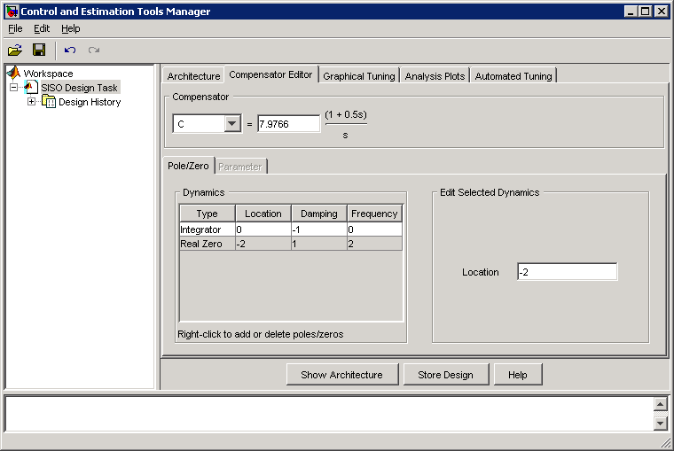

SISO 設計ツールの Getting Started
目次
補償器設計作業と SISO 設計ツール
SISO 設計ツールは、フィードバック制御システム用補償器を調整するための対話型自動ツールを提供することで、補償器の設計プロセスを容易にします。SISO 設計ツールでは次の作業が可能です。
1) 時間、周波数および極/零点の応答プロットに対する制御設計要求を定義することで、設計問題をグラフィカルに設定する。
2) 以下の手段を使用して補償器を調整する。
- Ziegler Nichols、IMC、LQG などの自動設計法
- ボードや根軌跡などの設計プロット上の極/零点のグラフィカル調整
- Simulink® Design Optimization™ を使用した、時間領域および周波数領域の条件を満たすための最適化
3) 補償器の調整中に閉ループ応答と開ループ応答を動的に更新し、制御システムの性能を表示する。
SISO 設計ツールを使用した設計プロセスを、例を示して説明します。
補償器設計の例
この例では、次のシステムの補償器を設計します。

設計仕様は次のとおりです。
- ステップ入力に対してゼロの定常偏差
- 80% 立ち上がり時間 < 1 秒
- 整定時間 < 2 秒
- 最大オーバーシュート < 20%
- 5 rad/s 未満の開ループ クロスオーバー制約
SISO 設計ツールの起動と設計目的の設定
この例では、フォワード パスのコントローラに標準的なフィードバック構造を使用します。これは、SISO 設計ツールを起動したときの既定のフィードバック構造です。指定したプラント G で SISO 設計ツールを起動するには、次のように入力します。
>> sisotool(tf(1,[1,1]))
これにより、2 つのウィンドウが表示されます。最初のウィンドウは Control and Estimation Tools Manager (CETM) です。

2 番目のウィンドウは SISO 設計のグラフィカル エディターです。

CETM の [SISO 設計タスク] ノードには、補償器の設計オプションの設定や補償器の操作に使用するタブ付きのパネルが含まれています。各パネルの機能の詳細は、ドキュメンテーションを参照してください。
この設計例では、根軌跡プロットと開ループ ボード プロットを使用して補償器をグラフィカルに調整し、ステップ応答を表示して設計を検証します。
閉ループ ステップ応答を表示するには、CETM の [解析プロット] タブをクリックします。次に、最初のプロットに対して [ステップ] を選択することでプロットを設定し、応答の [開ループ r から y] の最初のチェック ボックスをオンにします。これにより、SISO Tool Viewer が表示されます。


次に、時間領域設計要求をステップ応答プロットに追加します。追加するには、軸を右クリックし、[設計要求] -> [新規作成] メニュー項目を選択します。[ステップ応答の境界] 設計要求タイプを使用して、立ち上がり時間、整定時間、およびオーバーシュート条件を指定します。

これで、この時間応答とその条件を使用して、補償器の設計の性能を表示できるようになりました。

周波数領域のクロスオーバー条件を指定するには、SISO 設計ウィンドウのボード軸を右クリックし、[設計要求] -> [新規作成] メニュー項目を選択し、ゲインの上限を指定します。

これで例が設定されたので、例の仕様を満たす補償器の設計を開始します。
補償器の調整
補償器は、グラフィカル エディターまたは CETM の [補償器エディター] タブを使用して手動で調整できます。この例では、グラフィカル エディターを使用して補償器を調整します。設計を開始するにあたって、ステップ入力に対する定常偏差がゼロになるように積分器を追加します。積分器を補償器に追加するには、根軌跡プロットで右クリック メニューを使用して、[極/零点の追加] -> [積分器] を選択します。根軌跡プロットに適した形状を作成するために、約 -2 の位置に零点を追加します。零点を追加するには、根軌跡プロットで右クリック メニューを使用し、[極/零点の追加] -> [実数零点] メニュー項目を選択し、根軌跡プロットの実軸の約 -2 の位置で左クリックします。次に、ボード プロットで 大きさのプロットの曲線をクリックしてドラッグし、クロスオーバー領域と時間領域の制約が満たされるように開ループ ゲインを調整します。


補償器を表示するには、[補償器エディター] タブに移動します。補償器を調整するためにグラフィカル調整プロットで実行した手順は、このパネルで実行することも可能です。

補償器の自動調整
手動調整用のインターフェイスに加えて、SISO 設計ツールには次の自動調整アルゴリズムも用意されています。
- [自動調整] パネルの [PID 調整]、[IMC 調整]、および [LQG 合成] の各オプションを使用して、閉ループ時定数などの調整パラメーターに基づいて補償器の初期パラメーターを計算します。SISO 設計ツールの自動コントローラー設計のデモを参照してください。
- [自動調整] パネルの [最適化ベースの調整] オプションを使用して (Simulink Design Optimization が必要)、時間領域と周波数領域の両方の設計要求に基づいて補償器を調整します。DC モーター コントローラーの調整のデモを参照してください。
まとめ
SISO 設計ツールを使用して、指定された設計要求をすべて満たす補償器を設計することができました。このツールは、次の機能を持つ対話型の視覚環境を提供することで、補償器のヒューリスティックな設計プロセスを容易にしました。
- 設計要求の指定
- 補償器の調整
- 設計の性能評価